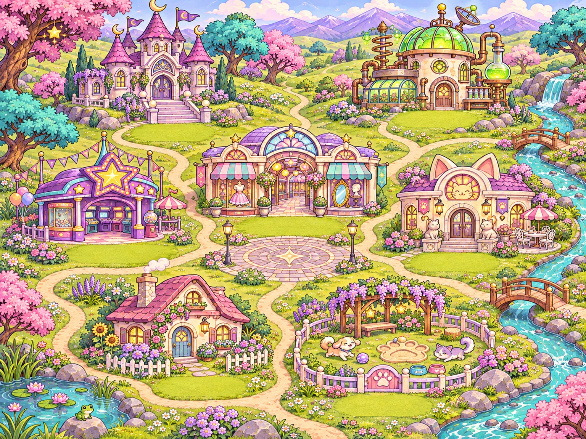

✧ A WORLD WAITING TO BE CLICKED ✧
Welcome to GlitchNet Village!
Take the winding path. Follow a little sparkle. Find somewhere that feels like you.
explore.world · The Glimmering Vale
★ YOUR ADVENTURE STARTS HERE ★ 3 places open 4 on the horizon
Choose a building to explore. Tab through destinations, or use the directory below.

Avatar MallAvatar Studio Open!Avatar MallA fresh look, a new hairstyle, a little main-character magic.Open · Visit Avatar Studio
Cat ArchiveCat Café · Gallery Open!Cat Archive / Cat CaféA tiny museum of internet cats. Every exhibit is purrfect.Open · Visit the Cat Gallery
My HomeEnter Your Room!My HomeYour cozy pixel room, saved decorations and familiar little things.Open · Enter your room
WHERE SHALL WE GO?
The village directory
Every path, in one handy place.
✦ EXPLORER’S NOTE ✦ Our world is just beginning! Avatar Studio, your homepage, and the Cat Gallery are open. Pet Park is reserved for adopting, brushing and caring for tiny digital pets. The other locations are previews of places still to come.